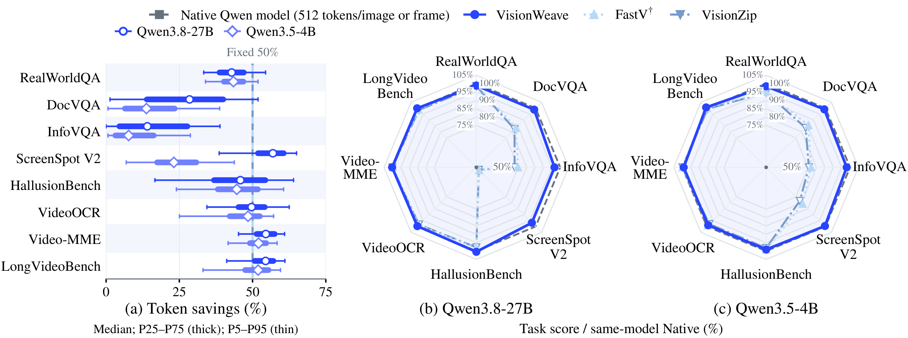

一张文档图里，小字需要细看，大片留白却未必需要同样多的表示。视频中也存在大量相似背景。如果所有区域都转换成同样密集的视觉 token，语言模型就要为这些冗余付出计算和显存成本。
本文解读 VisionWeave: Weaving Elastic Visual Representations as a Native Capability of MLLMs，依据 2026 年 10 月 6 日提交的 arXiv v1。它学习为每个局部区域选择粗或细的表示：在 Qwen3.8-27B 的八基准实验中，平均减少 43.0% 视觉 token，保留约 98.9% 的原模型相对表现。读这组结果时，需要同时看压缩预算、具体任务损失和真实服务条件。
一、课题解读：图像的哪些地方值得多算
多模态语言模型通常先用视觉编码器 ViT 将图片分成 patch，提取局部特征，再把特征合并、投影成语言模型可读的视觉 token。高分辨率文档、小型界面元素和长视频都可能产生很长的输入序列。
这些 token 会影响语言模型的输入处理、注意力计算和 KV 缓存。降低图片分辨率能直接减小输入，但也可能把小字、按钮边缘或空间关系一起抹掉。另一条路线是在保留原始视觉输入后，决定哪些区域值得使用更细的表示。
这项研究的核心是按内容分配表示精度。评价时需要同时检查图像信息是否足够、模型是否学会利用新的表示，以及减少 token 能否转化为实际延迟和吞吐改善。视觉 token 减少比例与整个系统的计算减少比例并不相等，视觉编码器和新加入模块仍然需要运行。
二、相关文献解读：从删 token 到学习粒度
| 工作 | 已有思路 | 与本篇的连接 |
|---|---|---|
| FastV | 根据早期注意力信号，在语言模型后续层剪去部分视觉 token | 展示视觉序列存在冗余，也引出删去区域后可能丢失什么信息的问题 |
| VisionZip | 选择有信息量的 token，并压缩冗余表示 | 用更短视觉序列降低成本，是本文主要对照之一 |
| ViCO | 通过一致性训练和路由，为图像 tile 分配不同压缩率 | 已经探索内容自适应，本文进一步将选择细化到原生 patch 网格中的局部块 |
VisionWeave 为每个局部块保留一个选择：四个细 token，或者一个覆盖该块的粗 token。其价值需要由“表示构造、空间分配、训练适配”共同解释。论文对 FastV 使用了便于服务引擎集成的 FastV† 变体：把选择移到视觉编码器之后。因此，后文的比较应理解为这个改造版本的结果。第 3.1 节
三、研究问题解读：少表示一些，能保留多少能力
为了组织阅读，我们将论文目标归纳为三个问题。
- 如何构造粗表示，又保留需要的细节？ 同一图片的不同区域要能使用不同粒度，同时保持空间位置可解释。
- 如何让路由选择真正适合下游任务？ 需要学会在哪儿压缩，并让语言模型适应粗细混合的输入。
- 收益能否跨任务、输入规模和服务环境成立？ token 数下降后，要进一步测量质量、吞吐和响应延迟。
这些是我们的阅读归纳。论文主要验证自然图像、文档、界面定位和视频任务，没有直接验证医学影像判读等高风险应用。
四、方法解读：先构造两种表示，再学习如何选择
第一步：为同一块区域准备粗、细两种表示
设 ViT 输出 H×W 个 patch 特征。原生 merger 每合并 2×2 个 patch，就产生一个细 token，细 token 网格为 H/2×W/2。
新增的门控空间池化器先将每组 2×2 patch 压成一个特征，再经过原生 merger，得到 H/4×W/4 的粗 token 网格。因此，同一块 4×4 原始 patch 可以用四个细 token，也可以用一个粗 token。若全部采用粗粒度，视觉 token 数为原来的 25%，节省上限为 75%。这是该两级设计的结构上限，并非所有输入的实测节省。
池化器先归一化特征，结合局部上下文计算逐通道权重，再对修正后的特征加权聚合。它让不同位置在不同特征通道上的贡献可以不同，初始状态接近对归一化特征做平均池化，随后通过训练获得更合适的聚合方式。第 2.2.1 节
粗 token 的位置设在对应四个细 token 的几何中心。MRoPE 用时间和空间坐标表示位置，粗细 token 因而处于同一坐标体系。覆盖整个区域表示每个区域都有一个表示，并不能保证其中所有原始细节都被无损保存。
第二步：从多层视觉特征决定哪里可以变粗
每块区域有一个可学习的查询向量，依次读取 ViT 输入、中间层和末层特征。每个深度先关注本块 4×4 patch，再关注整帧，兼顾局部细节和全局语义。27B 实现使用深度 [0,13,27]，共六个局部或全局交叉注意力块。
路由器输出采用粗表示的概率 p。默认 p>0.5 时保留一个粗 token，否则保留四个细 token，再按原有空间顺序收集成混合序列。这里路由读取视觉特征，没有直接将当前文本问题作为路由输入。它学习训练任务分布下的内容分配，是否能为同图不同问题动态改变注意重点，还需要进一步研究。第 2.2.2 节与 Algorithm 1
第三步：用原模型教会新模块和语言模型
教师始终是使用原生细 token 的冻结模型。教师生成回答，学生在相同回答前缀下，学习匹配教师每个位置的输出分布。KL 蒸馏使用教师概率最高的 512 个词表项并重新归一化，属于 off-policy 自蒸馏。
| 阶段 | 学习什么 | 输入如何组织 | 为什么需要 |
|---|---|---|---|
| 1：粗表示蒸馏 | 只训练池化器 | 所有块都用粗 token，长度为原来的 25% | 先让粗表示能够支撑原模型回答 |
| 2：软混合蒸馏 | 只训练路由器 | 粗 token 广播回四个位置，与细表示可微混合；序列仍为原长度 | 让粒度选择可以得到梯度 |
| 3：真实混合蒸馏 | 训练池化器与 LLM | 使用与推理相同的离散选择和混合序列 | 让模型适应真实运行时的输入 |
来源：Table 1、第 2.3–2.4 节。第三阶段冻结 ViT、原生 merger 和路由器。
第二阶段另加权重 0.02 的平衡损失，目标粗路由比例为 0.8；这不等于固定节省 80% token。第三阶段使用在训练子集上、以约 50% 视觉 token 节省为目标离线校准的路由偏置，随后保持固定。不同测试输入仍可产生不同节省。
27B 三阶段使用同一组约 777K 样本：图像理解 246K、视频理解 281K、GUI 定位 250K，均为打包前数量。训练步数依次为 5,257、2,500、1,000；全局 batch 为 32、64、512，前两阶段按打包序列计，第三阶段按样本计，不能直接作为相同口径的 epoch 比较。作者报告超过 30K A100 GPU-hours 的投入。Tables 2–3
第四步：让混合序列进入实际服务引擎
SGLang 集成需要处理半整数的块中心坐标，以及每张图片长度不同的视觉序列。实现将坐标乘二、旋转频率减半，保持 RoPE 相位；在调度前确定所选 embedding 和位置布局，继续支持动态批处理、KV 管理和 CUDA Graph 解码。第 2.5 节
截至本次阅读，官方仓库 README 表示当前推理实现面向 dense Qwen3.5，训练权重尚未开放；初始化脚本加入的新模块未经训练，默认保留全部视觉 token。下载代码或初始化模块，尚不能直接复现论文 27B 压缩成绩。官方 README
五、实验设计与结果：先看整体质量，再看速度与机制
主实验：八个基准上的质量与压缩率
作者比较原生模型、降低输入分辨率、FastV†、VisionZip 和 VisionWeave，覆盖 Qwen3.5-4B 与 Qwen3.8-27B。主表使用 512 的图像或每帧原生视觉 token 空间预算；三种固定预算基线目标节省 50%，VisionWeave 默认阈值为 0.5，节省按内容变化。
八个基准覆盖自然图像问答、文档、信息图、GUI 定位、幻觉和视频。分数统一到 0–100，越高越好；DocVQA/InfoVQA 使用 ANLS，HallusionBench 使用 aAcc，其余保留任务自身指标。它们是基准自动评价，并非统一的人类质量评分。论文没有为这张汇总表统一列出各测试集的实际样本数、重复运行和置信区间，我们不自行补齐。

下表摘取 27B 的完整八任务结果，便于区分平均值和具体任务。
| 基准 | 原生模型 | FastV† | VisionZip | VisionWeave | VisionWeave 视觉 token 节省 |
|---|---|---|---|---|---|
| RealWorldQA | 78.82 | 78.43 | 77.65 | 77.91 | 43.1% |
| DocVQA | 92.47 | 77.05 | 76.01 | 91.33 | 27.3% |
| InfoVQA | 74.13 | 55.49 | 53.96 | 71.61 | 16.5% |
| ScreenSpotV2 | 94.42 | 49.53 | 49.21 | 91.43 | 55.1% |
| HallusionBench | 73.25 | 71.92 | 71.66 | 73.60 | 44.9% |
| VideoOCR | 70.72 | 69.69 | 69.54 | 70.51 | 49.6% |
| Video-MME | 70.89 | 70.70 | 70.96 | 71.04 | 54.2% |
| LongVideoBench | 66.49 | 65.74 | 65.45 | 66.42 | 53.0% |
| 八任务平均分 | 77.65 | 67.32 | 66.81 | 76.73 | 43.0% |
来源：Table 4，PDF 第 9 页。两种剪枝/合并基线目标节省固定为 50%，与自适应预算不同。
27B 的平均相对性能损失为 1.08%，即摘要所说约保留 98.9%。这里是跨任务相对分数的汇总，不能解释成全部题目正确率为 98.9%，也不等同于用两个平均分直接相除。4B 的平均分从 73.25 到 72.59，平均 token 节省 35.8%，平均相对性能损失 0.90%。Table 4
主表说明方法对信息密集任务更稳，但它也使用了不同压缩预算。附录进一步让 FastV†、VisionZip 匹配 VisionWeave 的每个数据集平均节省率：27B 平均分为 70.10、70.33、76.73；4B 为 72.20、71.90、72.59。27B 的差距很大一部分来自 ScreenSpotV2，去掉该任务后分别为 73.86、73.85、74.63。某些单任务上基线仍更高，匹配数据集均值也没有匹配逐样本预算。Table 8
真实服务实验：2.30 倍吞吐有具体条件
| 指标 | 原生 27B | VisionWeave | 改变 |
|---|---|---|---|
| 吞吐，requests/min ↑ | 0.90 | 2.07 | 2.30 倍 |
| 平均首 token 延迟，秒 ↓ | 169.90 | 77.54 | 降低 54.4% |
| P95 首 token 延迟，秒 ↓ | 281.41 | 120.59 | 降低 57.1% |
| 平均每输出 token 时间，毫秒 ↓ | 355.64 | 140.29 | 降低 60.6% |
两者均使用 2×A100-80GB、BF16、TP=2，在 LongVideoBench 上以 2 FPS、最多 256 帧、每帧 1,024 原生视觉 token 运行；客户端并发 4、服务端上限 8，启用分块 prefill 和 CUDA Graph 解码。该长视频负载支持实际加速结论，尚不能据此保证短图片、不同并发或其他硬件也有同样的 2.30 倍收益。这里的速度实验输入预算与前面的 512 主表不同。
消融：在哪儿分配，与保留多少都重要
随机打乱同一样本各块的路由分数，可以保留该样本的粗 token 数量，同时破坏空间分配。27B 平均分从 76.73 降到 71.37，ScreenSpotV2 从 91.43 降到 59.28；4B 平均分从 72.59 降到 70.28。这比仅比较不同预算更直接地支持“位置分配有贡献”。Table 6
池化器消融在 4B 第一阶段、统一节省 75% token 时比较门控池化和 pixel-unshuffle 投影器。前者八任务均更高，DocVQA、VideoOCR 分别增加 2.64、2.77 分。第三阶段消融则在 27B 上将平均分从 73.15 提高到 76.73，其中定位从 66.59 到 91.43，RealWorldQA 却下降 1.18 分。这些结果支持真实混合输入适配，但没有完整隔离所有路由层数、坐标设计和训练预算的贡献。Figure 7、Table 7

额外控制：同一模型还可以调压缩程度
将路由阈值调低，会让更多区域采用粗表示，无需重新训练。27B 在 Video-MME 上把阈值从 0.5 降到 0.25，节省从 54.2% 增到 66.0%，分数下降 0.37 分；4B 同样调整后节省从 51.4% 到 62.1%，保持 67.22。这说明默认点之外还有运行选择，并不构成所有任务的无损压缩保证。第 3.5 节、Figure 8
六、我们自己的思考
课题思考：这个领域在研究什么
视觉效率研究正在将“需要多少表示”变成模型可以学习的决策。这里最值得关注的是，内容分配、空间坐标和语言模型适配被放到同一训练与部署流程中。对科研文档阅读而言，图注、小字、坐标轴与背景的价值不同；如何按研究问题保存证据，是一个自然的后续方向。
局限问题思考：目前还存在哪些问题
- 内容自适应仍有任务边界。 当前路由没有直接读取文本问题，只有粗细两级；平均质量接近原模型，也可能掩盖少数小字或关键位置的错误。
- 贡献和比较尚未完全拆开。 需要训练的完整方法与启发式基线投入不同，FastV† 又经过实现调整。现有消融没有穷尽路由、位置编码和训练阶段的替代设计。
- 复现和投入回收需要更多证据。 训练资源较大，当前权重未开放；服务速度来自一个特定长视频设置，缺少跨负载和训练摊销后的净收益测量。
解决方案思考：这些问题有哪些解决方向
- 验证问题条件化的粒度分配。 用同一图片的不同问题成对测试，关注小字、稀有对象和错误定位，并比较更多粒度及必要时回退细表示的策略。
- 建立更完整的同条件对照。 固定逐样本 token 预算和训练投入，比较路由结构、位置设计，以及同样自蒸馏过的基线；报告重复运行与不确定性。
- 补齐可复现的成本曲线。 发布训练权重、数据配比和评测配置，测量短图、长视频、不同并发下的吞吐与费用，再估计达到何种调用规模才能抵消训练投入。
本文依据 论文 v1 PDF 与上述官方仓库快照。插图为原论文 Figures 2、3、9，版权归 Yuan Feng 等原作者，按论文 CC BY 4.0 引用；仅转为 PNG，未改绘。表格为原论文结果摘录，解释、局限归纳和后续实验建议为本文分析。